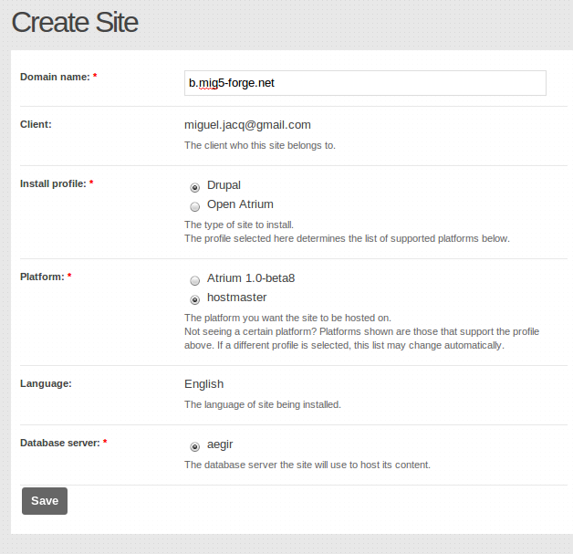
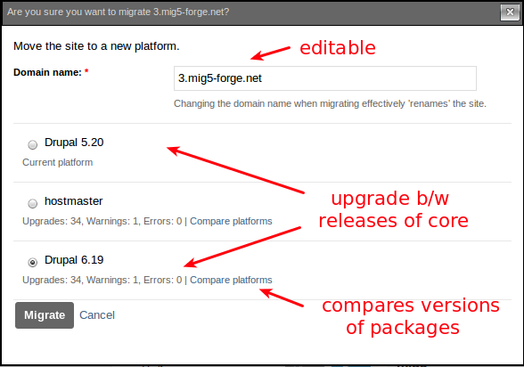
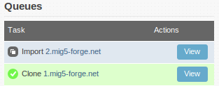
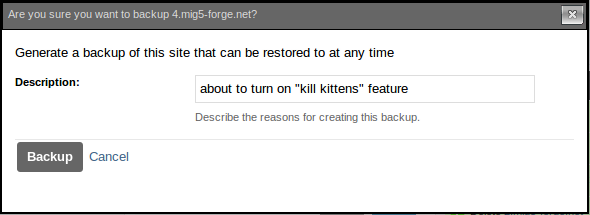
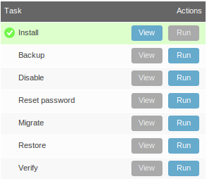

Site-specific Aegir tasks
Aegir provides a number of tasks that can be run on sites. Below, we'll look at the most common ones that ship with Aegir.
Installing a new site
Creating a new website using Aegir is really, really easy, and is probably one of the most exciting aspects of Aegir. The very idea of clicking a button and suddenly being able to visit a new site may even be the prospect that drove you to installing Aegir in the first place.
To create a site you must have created a Platform first, which is the codebase, typically a copy of Drupal core, on which to place your new site. Read the Platform documentation if you have not yet completed this stage.
The Site form
Much like your Platform, a site is represented as a node in the Aegir frontend. To create a new site, you must create a new Site node.
The site node is a form requiring various attributes to be filled out in order to accurately advise the Aegir system about what kind of site you wish to create. These fields commonly are:
- Domain name: The site name. This becomes the title of the new Site node.
- Client: The client or owner of this site.
- Install Profile: The installation profile to use to install this site. This has a dramatic effect on the end result of your site.
- Platform: The platform to install the site on. The list of available platforms is based on what profile you choose above (in other words, which platforms support that installation profile). The choice of platform also implies which web server hosts that platform; so this is why 'web server' is not a selectable option in the form.
- Language: The language to install the site with. This is dependent on the profile or platform chosen.
- Database server: The database server to install the database on.
Below is an example of the site form.

Installing the site
Once you have filled out the site form per your requirements, click Save to submit the form. An 'Install' task is automatically spawned and added to the task queue for the dispatcher to execute.
The backend does the hard work of essentially completing a standard Drupal installation automatically. It creates a database and database user for the site, executes the Drupal installation procedure, populates the database, and generates a web server virtualhost configuration file for the site (Apache or NginX depending on your environment). In the event that the platform is located on a remote web server, the data is synced across from the main Aegir site to the remote server.
Finally, it restarts the HTTP service to load the new site's virtualhost into the HTTP service's runtime environment.
A traditional 'welcome' e-mail containing the one-time login link is sent to the e-mail address of the 'Client' who owns this site. As well as that, the login link is generated and displayed on the new site node view (see below).

As you can see above, the successful installation of the site has provided a series of tasks available to be performed against this site. This task block is similar in appearance to the Task Queue block we previously discussed, but rather than showing a list of tasks either run, queued or processing, it instead displays the list of potential tasks that may be run for this site only.
We will discuss these tasks and more in the following sections.
Resetting site password
The 'Reset password' task is a simple one: it allows you to generate a new one-time login URL for a site.

The one-time login URL is bound to the account of the admin user (uid 1) of a site. It cannot be used to reset the password of another user on the site.
This can be handy in cases where the password for the admin user of a site has been forgotten. The 'Reset password' task is re-runnable and provides a convenient method of re-gaining access to a website from within Aegir.
In normal situations, viewing a site node shows a 'Go to' clickable link that takes the user to the site in question.
When the Reset password task has been run on a site, the 'Go to' link automatically gets changed to become a 'Login to' link that is the one-time login URL.
Once the one-time login URL has been clicked, this link returns to being a 'Go to' link.
Migrating/upgrading sites
One of the most powerful features of Aegir is the way it can help you to upgrade large numbers of websites safely.
For example, you may have dozens of sites hosted on a drupal 7.41 codebase. But suddenly the 7.42 release comes out with vital security fixes. Previously you'd have to go to each site, back up the files and database, upload the new codebase, run update.php, check everything worked and then onto the next site.
With Aegir you simply click a button in the frontend and it handles everything. This is called 'migrating' sites in Aegir terminology, because it might be used in more cases than simply upgrading the main codebase. For example you may have different 'platforms' with different mixes of contrib modules and themes and charge clients for tiers of 'basic', 'advanced' and 'gold' packages. When they choose to move from basic to advance, you simply migrate their site.
Other examples of using Migrate include:
- moving a standard Drupal site to a Pressflow platform for performance enhancements
- renaming a site (giving it a new URL entirely)
- the Clone feature (discussed in later chapters) is a subsidiary of Migrate, except it doesn't move but copy the site.
How to migrate a site
Enabling the feature
By default, Migrate is not enabled in Aegir after a fresh installation, as it is an optional feature. This means that the 'Migrate' button is not immediately present in the list of available tasks for a site.
To enable the Migrate feature, simply go to /admin/hosting/features and check the Migrate feature. Submit the form and then return to the site node, and you'll see that the Migrate task is now available.
Migrating a site
In the Aegir frontend, click on the website that you want to migrate. As per usual, in the 'Site view' you are presented with some summary information about the site, as well as a list of available tasks. Click the 'Run' button for the 'Migrate' task. A modalframe dialog will appear in your browser.

The Migrate form has several options. These are:
- Domain name -- This is already the domain of the existing site. If you are intending to simply rename the site (give it a new URL altogether), you can simply change this field and leave the target platform be the 'current platform'. This will make the site accessible under the new URL.
- Platform selection -- A radio selection of available platforms on the Aegir system. Certain platforms will be un-selectable. This is because they contain 'Errors' - that is, they contain versions of packages (modules, libraries or themes) that are of an older version than that of the original platform. You cannot upgrade a site to older versions of the same package.
Upgrades, warnings, errors?
What's this about upgrades, warnings and errors on each potential platform to migrate the site to?
Up until now you might be forgiven for thinking that Aegir is simply automating the install of sites and creating Apache vhosts and databases.
The truth is, Aegir actually is a much more advanced tool than that. It keeps a running registry in its database of your Platforms and Sites and what modules, themes, libraries and install profiles are available on platforms and installed on sites.
Not only does it keep track of what these packages are, but it also keeps track of what version of a package is installed (say, Views 6.x-2.11), and whether it is actually an enabled module or not.
The Migrate task, despite its name, is the tool for upgrading your site, because the Migrate code actually invokes the command drush updatedb in the backend, automatically. drush updatedb is the equivalent of running /update.php in your browser against your site.
In this way, when the time comes (and it always does) to Migrate your site, Aegir is able to intelligently analyse the available platforms on the system and make a sane judgement on where you can upgrade your site to. The logic is as follows:
- Current platform has module X, schema version 6002 and 6003
- Site module has module X, schema version 6003 installed
- Target platform A has module X, schema version 6002. Site cannot be upgraded to an older schema version. An error.
- Target platform B does not have module X at all. Theoretically this is still a possible upgrade, but module X will probably be disabled by Drupal's upgrade logic during the process. This is a warning.
- Target platform C has module X, schema version 6003. Site is upgradeable, there is no change.
- Target platform D has module X, schema version 6004. Site is upgradeable. There is a module update to be performed.
In the logic laid out above, examples 4, 5 ,6, or platforms B, C and D would be listed as valid target platforms. Target platform D would actually upgrade the site's module to a newer version, which may involve database updates.
To view the schema differences between current and target platforms in this way, click the 'Compare platforms' link against each target platform in the form.

If your intention is to upgrade your site between versions of any package (this can include core or contrib!), you need to make sure the relevant packages are present and up to date on the platform you want to migrate to. Aegir can only try and make this judgement call based on the information you feed into the system by adding and verifying platforms with the correct components.
If you've had to download extra packages to the target platform to make them possible candidates for an upgrade, you may need to visit that platform node in the Aegir frontend, and run the Verify task against the site (this is a re-runnable task). This updates Aegir's registry of information about all the packages on the platform.
The migration process
Select the relevant target platform and click 'Migrate' to submit the form. The modalframe dialog will close and Aegir will spawn a new Migrate task into the Task queue, and process it on the next cron run.
The process of Migration in the backend occurs automatically, like all Aegir tasks, and is as follows:
- The site is placed into maintenance or 'site offline mode' as a precaution. Safety first!
- A 'backup' task is implied silently. The site and its database are backed up into a tarball. Still safety first!
- Depending on the settings sent to the backend (are we migrating the site under its current name, or just renaming the site, or renaming the site and migrating as well), various metadata regarding the site is updated
- If we are moving to a new platform (upgrading, not just renaming), the backup tarball that was made earlier, is used in a silent 'provision-deploy' command, which essentially unpacks the tarball into the target platform and creates a new database and database user for the site, importing the database dump that was made in the backup
- The deploy task above, invokes drush updatedb, effectively upgrading the site by calling all hook_update() functions.
- Various bits and pieces are fixed up, such as paths to files in the 'files' table of the database.
- Caches are cleared
- A verify task is run, settings.php and apache vhost are updated to reflect the new path (new platform) and new database credentials, site gets brought back out of maintenance mode.
- If all went well and nothing has fatally errored here, we remove the old copy of the site from the previous platform (it wasn't touched til now, other than backing it up)
Potential errors?
If something goes wrong during all this work, the metadata reflecting where the site is located on the system (which platform it is on) and other information is reverted. The task will become 'red' in the task queue, indicating an error.
Aegir will attempt to restore the site's vhost and settings.php to reflect the original platform and database credentials, and bring the site out of maintenance, in an effort to return the site to a state where it was prior to the Migrate.
The user may be requried to manually recover from this error depending on what has occurred. Nonetheless, remember that a backup was made early on, and this can be used to restore the site easily.
Migration Tips
In the context of sites, migration is the task of moving a site from one platform to another. Migration is the Aegir-preferred method for applying updates to modules and certainly to core. In other words, to upgrade core or modules, create a new platform with the upgrades, then migrate sites to the new platform.
Ideally, a migration requires nothing more than a mouse-click on the Migrate button on the Site node in your Aegir for the site you want to migrate. If you've prepared your destination platform properly, a migration will be this simple. Proper preparation, therefore, is vital.
To prepare a new platform to be a destination for migration, consider at least the following:
- The directory structure for your modules and themes must be the same on the source and destination platforms. For example, if the modules on the source platform are in
../platform-abc/sites/all/modules/contribthen the destination platform must have its modules also in this directory. - You may need to clear the Drupal cache on the source platform to avoid migration errors. Upgrades to Aegir in the future may handle this automatically, so be aware of the version of Aegir you're running and whether it includes upgrades to address this issue.
Cloning sites
Aegir provides an easy method of making entire copies of a site. This includes the actual site files, modules and so on, as well as a copy of the actual database.
This feature is called 'Clone' in Aegir, because it is a method of duplicating a site with a new URL or 'site name'.
The feature is very closely linked to the Migrate feature because it is almost the same, except that rather than move the site, it leaves the existing site in place and just copies it to a new name.
For this reason, enabling the Clone feature also enables the Migrate feature.
Enabling Clone
The Clone feature is disabled by default on a fresh Aegir installation. To enable it, visit /admin/hosting/features in your Aegir frontend, check the 'Clone' box and submit the form.
Now when you visit a site node in your frontend, you'll see there's a 'Clone' button in your list of available tasks for the site.

Cloning a site
To clone a site, simply click the Clone button. A modalframe dialog will appear with a form. If you are familiar with the Migrate feature, you'll likely notice the similarities between the two forms.
The clone form has these options:
- Domain name - this is the URL for the new site, which must be unique.
- Platform - this is the target platform to clone the site to. It may be the current platform or a different platform that meets the requirements for hosting this site (has all the correct or newer versions of relevant modules)
- Database server - this option is only available if you have a remote database server configured, otherwise it is implied.
- Site aliases - If you have the Site Aliases feature enabled, you are also able to set new Site Aliases for this clone at this point. If the original site also had aliases, you will have to change or remove the aliases that load in this form before you can submit it.

As with the Migrate form, you can view the package comparison table between the current platform of the original site and that of a target platform, by clicking the 'Compare platforms' link. You can only clone a site to another platform if it meets the requirements for successfully hosting that site. In other words, the target platform has to contain the same or newer versions of modules. If the packages are missing on the target platform, those missing modules may be disabled.
Once you have made your selection and submitted the form, a 'Clone' task is spawned and added to the Task queue ready for dispatching.
The cloning process
The Clone task makes the following actions in the system:
- Makes a backup of the original site. This tarball will be used to 'deploy' a copy of the site
- Generates a new Drush alias for the new site
- Deploys the backup tarball to the new location as a new site
- The new site is imported and verified into the Aegir system, and relevant configurations are saved (HTTP vhost file, etc)

When might I want to use Clone?
Clone can be a very useful tool in a variety of situations. Commonly, people use Clone for:
- Testing what a 'Migrate' might do to a site, without migrating it. In other words, Clone can be used as a simulation tool to anticipate results of upgrading a site to a new release or build safely.
- If you have a 'template' site, often with a custom install profile, and anticipate having to generate multiple sites that are very similar, you can use Clone to rapidly do this.
- Cloning a live site to a 'development' version of a site, especially to a development platform residing on a remote 'development' web server, can be a useful and fast method of working on a site by ensuring the dev environment has the latest database and files from production.
Is there any relationship between the original and cloned site?
Currently there is no real relationship between the original site and any of its clones.
In future, Aegir development is likely to develop natural relationships between these sites, which will allow for 'rules' to be established, for example being able to regularly 're-clone' a site 'over the top' of previously-made clone, or automatically schedule clones after the original site has been migrated (upgraded) to keep a clone 'up to date' with the original.
Other uses may develop in time.
Disabling and Enabling sites
Aegir provides a method for sites to be temporarily 'disabled'. This means preventing all access to a site, but in a way that it can be re-enabled later.
Think of disabling a site in a similar fashion to placing a site under Maintenance mode, but that instead of a 'Site offline' message, a request to the site is redirected to a special page under the main Aegir frontend's URL, and a 'Site disabled' message is shown instead.

Aegir makes no presumptions about why you may wish to disable a site. Use this feature at your own discretion.
How to Disable a site
To disable a site, simply click on the site node in the Aegir frontend. In the list of available tasks for this site, click the 'Disable' button. A modalframe dialog will load, prompting you to confirm if you really wish to disable the site. Confirm and submit the form to spawn a 'Disable' task to the queue to take this site offline.
How to Enable a site
Once your site has been disabled, the list of available tasks has now radically changed in the site node: you now have only the option to Delete the site or Enable it again.
To re-enable a disabled site, simply click Enable. The site will be brought back out of hibernation and become live again.
Disabling before deleting
In Aegir's default configuration, you must first disable a site before you may delete it. This is meant as a precaution - if considering deleting a site, it forces you to think about whether you really want to, before accidentally clicking Delete and irreversibly removing your site.
But don't worry - Aegir always silently makes a backup of the site before disabling (or deleting) a site.
Backup and Restore
The Aegir system provides a convenient method of backing up sites, and restoring sites from those backups.
Like most other Aegir functionality, the Backup feature comes in the form of a task, aptly named 'Backup'. It is one of the core features of Aegir and thus is always available for a site, out of the box.
Backing up a site in Aegir is twofold: the site folder (containing the settings.php, files dir and so on) is added to a tarball along with a database dump of the site and stored in /var/aegir/backups on the master Aegir server.
In the event that the website or database is a remote server, those relevant components are synced down to the master Aegir server to be tarballed up. Only the master Aegir server stores backups of a site. (This is known as a 'spoke' model, as opposed to a 'mesh' or distributed model, and suits the Aegir system at this time).
The tarball generated for a site can be used for a number of things: restoring a site from that backup via the 'Restore' task, or from the command line using the provision-deploy command for advanced users as a method of quickly importing a site onto a system.
Other cases whereby a backup task is generated and its tarball used are when a site is being Migrated (upgraded) or being Cloned as a new site, but that is outside the scope of this chapter.
Backing up
When viewing the site node of a site in the Aegir frontend, click the 'Backup' button in the list of available tasks for this site.
A modalframe dialog appears, prompting for confirmation, as well as providing an editable Description field which you may fill out. This field is optional, designed only to aid you in future if you seek a reason for why a backup was made.

Once the form is submitted, a Backup task is spawned and added to the Task queue for dispatching by the backend.
The full output of a Backup task is viewable in the task log. Extra security precautions are built into Aegir so that the 'mysqldump' command uses file descriptors to hide exposing the database user's password in the running process and output of the task.
Restoring from a backup
Restoring a site from a backup is simple and follows the same pattern as backing up. Simply click the 'Restore' button from the list of available tasks for a site. A modalframe dialog will load, and the form offers a list of radio items. These are the backups that have been made for a site, in the format of 'Date/time - Reason'.
Where no custom reason was given for a backup, the message 'Generated on request' is shown instead.

Choose a backup to restore from and submit the form. A 'Restore' task will be spawned and added to the Task queue for dispatching by the backend.
The restore process
The following describes what happens during a Restore task:
- puts the site under 'maintenance mode' temporarily (safety first!) generates a new backup of the site before restoring to it (still safety first!). This new backup will be available in the list of backups if you ever re-run the Restore task, and will carry the description 'Generated before being restored to a previous version'.
- uses the implied provision-deploy command in the backend to unpack the tarball,
- create a new database and import the database dump into it,
- create a new database user,
- spawn a verify task silently, which will:
- re-write the settings.php,
- sync the data if necessary to a remote platform,
- re-generate the web server's vhost configuration file for this site,
- finally reload the web server
Automatic backups and purge
Automatic creation and deletion (clean-up / purging) of backups can be handled by Hosting Site Backup Manager. It makes it easy to set up scheduled backup tasks for all of your sites, which can be restored from the backups generated by these tasks.
While not included as a core component, the module is one of the externally-maintained ones that ships with Aegir. These modules are referred to as Golden Contrib.
To enable the functionality, surf to Administration » Hosting (Features) » Experimental. Check Backup Manager and optionally one or both of its sub-modules (below). Then save the form.
- Backup scheduling/queue (allows backups to be scheduled per site)
- Backup window (allows backups to be restricted to certain time periods)
Deleting sites
There may come a time when you want to remove a website from your Aegir system and your server altogether. As you'd expect, Aegir handles this for you too. It ships with a 'Delete' task that is capable of removing the site from the Aegir system, as well as carrying out backend tasks to remove the site from the filesystem and web/db servers.
The Aegir frontend is a Drupal site in itself, and sites are represented in that system as nodes. New users that are familiar with Drupal often make the mistake of thinking that the process of deleting a site is like deleting a node in Drupal, and attempt to delete the site node (or are confused by the fact we hide the Delete button for this reason).
This is an incorrect method of deleting a site, and doesn't actually spawn a task to clear away the site from the server at all. Below are the steps to correctly remove a site.
Disable the site first
Part of this confusion can stem from the fact that when viewing a site node in Aegir, the Delete button is not actually present in the list of available tasks by default:

This is because, in the default Aegir configuration, you must run the Disable task against a site before you may Delete it. This logic is in Aegir to help users avoid accidentally deleting a site either by accidentally processing the task (despite having to confirm it first) or to prompt the user to think a little bit more on the decision before irreversibly blowing away the data.
The decision stems from Aegir development policy of being uncomfortable making such risky actions on your data. While it is possible to delete a site, we'd like you to really be sure that's what you want to do.
Once you Disable a site (see the Disable section prior to this chapter), the list of available tasks is modified to only offer an Enable or Delete button. At this point you can run the Delete task and permanently remove your site.

Delete without Disabling
The first method above is the default Aegir configuration. However, some users might be too confused by the lack of the Delete button altogether, which may not be ideal for your situation.
For this reason, Aegir also provides a configurable setting allowing a site to be Deleted without requiring a Disable first. This option makes the 'Delete' button appear in the list of available tasks, even when a site is currently in an Enabled state.
To activate this setting, visit /admin/hosting/settings on your site and uncheck the checkbox that is titled "Require site to be disabled before deletion".
Re-visit the site node and you'll see that the Delete button is now present and clickable, alongside the Disable button.

The deletion process
When you click Delete and confirm your intentions in the modaldialog that loads, a 'Delete' task is spawned and added to the Task queue to await dispatch by the backend system.
The process runs through a series of steps to remove this site from your server. These are as follows:
- Make a backup of the site and its database for the last time (safety first, remember!)
- Drops the site database
- Revokes the GRANT to that database for the database user (effectively deleting the database user)
- Deletes the site folder and everything inside it, from the platform that the site was hosted on
- Removes the Drush alias file for the site
- Removes the site's web server vhost configuration file
- .Reloads the web server
- Sets the site's status to 'Deleted' in the Aegir system.
Note: This process does not delete the site node from the Aegir system. This is by design. The site node is retained in the Aegir database for historical purposes (you could customise Aegir by adding the ability to run a report or a View of all deleted historical sites, for example)
The deleted status of the site, removes it from the list of sites in the 'Sites' page (and thus front page) of the Aegir system. Historical tasks run on the site remain in the Task queue history.
Manually deleting the site
Sometimes something goes wrong during an Install or a Delete task and a site doesn't install or get deleted successfully. The Delete task cannot be run or re-run on this site because Aegir has no way of knowing just how much of it got deleted (whether the files are still there but not the database, for example). Re-running the Delete task is likely to fail because some of these steps listed above will not exit successfully on completion.
At the time of writing, no task in Aegir exists to 'force' a removal of a site without having to bootstrap it first, so some manual steps are required on your part to remove this site.
- Manually remove the site files on the server if they exist (i.e.
/var/aegir/platforms/drupal-6.16/sites/my-failed-site.com) - Drop the database and revoke db user privileges associated with this site if it got created before failing (check the vhost configuration file's 'SetEnv' parameters, or the settings.php if the credentials are uncloaked, for the site's database name and user)
- Manually remove the Apache vhost file for this site if it is still present (in
/var/aegir/config/server_master/apache/vhost.d/) - Manually remove the Drush alias for this site if it is still present (in
/var/aegir/.drush/) - Enter the Aegir database from mysql and set the status of the node in the hosting_site table to -2 (deleted). For example, if your site node was nid 83 (the 'Edit' tab of the site node will tell you this), run
UPDATE hosting_site SET status = '-2' WHERE nid = 83; - Still in the Aegir database, delete the node record in the hosting_context table. For example, if your site node was nid 83 (as above), run
DELETE FROM hosting_context WHERE nid = 83; - Alternatively, if you want to even remove the node altogether from the system (not recommended), go to
/node/83/deletein your browser on the Aegir frontend and delete the node. This will remove the site node and all associated task nodes from the system, as well as remove the entry from the hosting_site table in the database. - If you are using the SSL feature and had Encryption enabled for this site, you may also need to manually delete the SSL certificate folder located in
/var/aegir/config/ssl.d/<example.com>and/or/var/aegir/config/server_master/ssl.d/<example.com>. - Additionally you may also need to delete the entry for the domain you are deleting in the hosting_ssl_cert table of the Aegir database.
- If you are using the DNS feature you may also need to remove the site's entry in the zone file by running the following command: drush @server_master provision-zone rr-delete example.com sub.domain A
- If your site has ssl support enabled you also need to remove ssl certificate from database issuing
DELETE FROM hosting_ssl_cert WHERE ssl_key = 'your.site.domain'; - Re-verify the Platform node where the Platform is the one where your site was hosted on. This will regenerate some metadata whereby the Platform believed it still had that site contained within it.
If you need to manually remove the site's platform see the instructions here: http://community.aegirproject.org/node/27